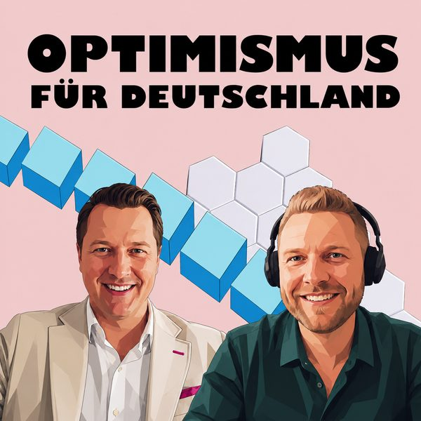

#58
Mut und Unternehmertum
Optimismus, Mut und Unternehmertum in Deutschland – mit persönlichen Rückschlägen und den Chancen durch KI.
mit Thomas Hoppe
Unternehmer und Autor von „Made in Germany“
- mutig · Hauptwert
- optimistisch
Diese Folge hören
Dort hilft jedes Abo und jede Bewertung dem Podcast.
Worum es geht
In dieser Folge spricht Manuel mit Thomas Hoppe über Optimismus, Mut und Unternehmertum in Deutschland.
Es geht darum, warum Gründerinnen und Gründer ein klares Ziel, Durchhaltevermögen und ein starkes Netzwerk brauchen. Thomas teilt persönliche Rückschläge, spricht über bessere Fehlerkultur und erklärt, welche Chancen durch KI und Digitalisierung entstehen.
Außerdem gibt er Einblicke in sein Buch „Made in Germany“, das Mut machen und Deutschland wieder nach vorne bringen soll.
ThemenOptimismus als Unternehmer-Mindset
Gründen in Zeiten von KI
Rückschläge und Fehlerkultur
Mut, Fokus und starkes Netzwerk
Deutschlands unternehmerisches Potenzial
Transkript lesen
Automatisch erstellt mit Spracherkennung (Whisper) aus der Audiodatei. Fremdwörter, Fachbegriffe, Namen und Zahlen werden dabei unter Umständen nicht korrekt erkannt.
0:04 Ja, herzlich willkommen zu einer neuen Folge des VUCA Blasters. Heute haben wir wieder einen sehr spannenden Gast für euch und zwar Thomas Hoppe. Er ist Unternehmer, Gründer und Geschäftsführer der Schülerkarriere GmbH sowie der Work Connect GmbH und seit November 2023 Bundesvorsitzender von die jungen Unternehmer. Der Verband vertritt junge Familien und Eigentümer, Eigentümer, Unternehmerinnen und Unternehmer bis 40 Jahre in Deutschland. Thomas bringt also nicht nur die Perspektive eines Verbandsvorsitzenden mit, sondern auch die Erfahrung eines Gründers, der seit Jahren an der Schnittstelle von Bildung, Arbeitsmarkt und Unternehmertum arbeitet. Ja, herzlich willkommen zu der Folge, Thomas. Ist dir noch was wichtig, was die Zuhörenden über dich wissen sollten, was dir, vielleicht was, also ist ja immer nur sehr, sehr, sehr, sehr kurz komprimiert, man kann natürlich nicht alles sagen, aber vielleicht ist dir noch was wichtig, was die Zuhörenden über dich wissen sollten oder fehlt dir? Das war schon ganz guter, ganz guter Abend, das ist immer spannend, mal von der externer Seite zu hören, was du gemacht hast. Ne, hört sich gut an und kreativer, chaotischer, interessierter Unternehmer und Verbandsvertreter und ja, stehe für das junge Unternehmertum in Deutschland und ich wollte mehr junge Gründerinnen und Gründer hervorbringen. Super. Ja, weil ich vielleicht noch vergessen habe, dass du ja auch neuerdings Autor bist von dem Buch Make in Germany, wieder Mut für Mutmacher in Deutschland vorwärts zu bringen. Das kommt 1. Juli raus, da können sich die Leute das bestellen, falls, ja, falls sie da Interesse daran haben und vielleicht die Folge, die dazu inspiriert. Wir haben die ersten drei Check-In-Fragen, manche mögen es, manche nicht.
1:43 Ich hoffe, wir kommen ja ganz gut durch. Die erste Check-In-Frage für dich wäre, was war dein letzter Aha-Moment? Aha-Moment war vor, ich glaube letzte Woche oder Anfang dieser Woche war das, wir haben über die Möglichkeiten mit KI gesprochen, über Claude und bekannt hat mir, er hat das gesamte Marketing-Team umgebaut in KI. Er hat jetzt 5 KI-Agents aufgebaut und die untereinander kommunizieren, untereinander die gesamte Marketing-Strategie, Content erstellen und komplett das Marketing jetzt schmeißen. Finde ich super krass, was mittlerweile möglich ist. Wir selber coden auch seit einiger Zeit mit diversen KI-Plattformen und ich finde es super spannend, Augen öffnend und das war auf jeden Fall der Aha-Moment, was jetzt mittlerweile geht. Vielen Dank. Die zweite Check-In-Frage war, was war eine gute Frage, die du zuletzt gehört hast? Ich hoffe, es war nicht die erste Frage. Ja, die Frage eben gerade kam schon ganz gut ran. Ja, ich bin ja viel pleased unterwegs und dann habe ich dann letztens einen Austausch gehabt, wie wir Deutschland wieder nach vorne bringen wollen und welche Rahmenbedingungen wir brauchen und was momentan schlecht läuft und das sind einige Fragen gewesen, aber gerade zur aktuellen Situation in Deutschland, ja, das ist eine gute Frage und ich hoffe, dass die Politik gut Antworten auf diese Frage findet. Dann noch die letzte Frage, dann hast du es geschafft. Wofür bist du dankbar? Dass es mir gewünschtlich gut geht. Ich bin immer wieder auch im Bekanntenkreis, der eine oder andere sehr stark kränkelt, im Familienkreis gerade zwei Todesfälle gehabt und da muss man dann schon glücklich sein und froh sein, wenn man gesund und munter ist und trotzdem Stress, den man hat, jeden Tag noch, ja, es trotzdem Spaß hat und gesund, wenn man gesund ist und man keine großen Bewegungen hat, die kleinen Bewegungen, Rückenschmerzen oder ähnliches, wenn man zu viel arbeitet, sonst kennt jeder, aber sonst keine großen Probleme. Super, vielen Dank für die Antworten.
3:40 Dann hast du es auch geschafft. Wir wollen ja heute ein bisschen drüber reden, auch was so Eigenschaften von VUCA Blaster sind, sind halt auch unter anderem Optimismus, aber halt auch Mut. Mit Mut hast du ja auch gerade das Buch drüber geschrieben, da wollen wir heute ein bisschen drüber reden. Vielleicht als Einstiegsfrage, was ist Optimismus für dich? Ich glaube, wenn man trotz diverser Widerstände immer wieder die Hoffnung oder die Hoffnung natürlich nicht verliert, als ich damals gegründet habe 2010, war das Startup oder das Gründertum in Deutschland nicht ganz so ausgeprägt wie heute. Und ich hatte auch keine wirkliche Ahnung, wie ich das machen sollte. Trotzdem dachte ich, irgendwie schaffe ich das und ich hatte das Ziel, ich möchte gerne eine Firma aufbauen, möchte gerne ein Problem lösen, ich möchte gerne etwas voranbringen. Und ich war eben optimistisch, dass ich es irgendwie hinkriege, auch wenn ich keine Ahnung hatte, wie ich es machen wollte. Und ja, immer wieder steh auf Mönchen, trotz Widerstände immer wieder weitermachen. Man muss Grundoptimist sein in Deutschland, wenn man unternehmerisch erfolgreich werden möchte. Wir hatten das auch schon mal in einer Folge, dass einer gesagt hat, hier der Nico Rose, was auch Führungskräfte machen, also sein sollten, halt diese optimistische Grundeinstellung, dass sie sagen, okay, es ist vielleicht jetzt nicht alles schön gerade, also da auch nicht lügen, also dass man sagt, okay, ist alles super, aber dass sie sagen, es wird besser, dass sie halt die Leute auch so mitnehmen und sagen, okay, wir kommen in eine bessere Zukunft, kommt mit mir. Das war so ein bisschen auch so, dass Unternehmer vielleicht auch so eine Einstellung haben.
5:15 Wir brauchen auf jeden Fall, du möchtest auch das Team mitnehmen, wenn das Team nicht an die Vision glaubt, an die Firma glaubt und denkt, boah, ist alles schlechter, dann ist die Arbeitsproduktivität schlecht, dann geht alles jeden Bach runter. Man muss ja Leute auch gut mitnehmen und motivieren können und Optimismus versprühen, weil sonst hat ja keiner Bock für etwas zu arbeiten, was eh keinen Erfolg bringt. Wie würdest du sagen, würdest du so andere motivieren? Ist das, oder ist das schwer zu sagen für dich, dass du da andere mitziehst? Weil du jetzt auch sagst, gerade so mit dem Buch Make in Germany, willst du ja auch vielleicht so andere inspirieren und sagen, okay, komm, ist nicht alles schlecht? Oder wie ist da so deine Sicht drauf? Einmal das und auch hier bei dem Buchprojekt, da hat mich mein Kompanier auch immer wieder motiviert, dass Sebastian, bei so einem Buch zu schreiben, ist ja doch schon richtig viel Arbeit. Und die Überwindung, wirklich hinsetzen, die Zeit nehmen, das runtertexten. Und ich habe meine letzte Diplomarbeit, das war 2012, das war auch schon ein paar Jahre her. Und seitdem habe ich keinen wirklich längeren Text mehr geschrieben. Das war völlig so eine Umstellung. Er hat mich immer wieder gepusht und motiviert und gesagt, komm, wir schaffen das. Und das war schon wichtig. Ja, wir haben zwar ein gemeinsames Ziel gehabt, trotzdem hat man viel Ablenkung gehabt. Dann geht man doch zum Sport, man tritt dann Freunde, man hat dann andere Themen, die dann gefühlt wichtiger sind, aber man muss sich da immer wieder pushen und motivieren.
6:40 Und da ist es aber ganz gut, wenn man einen anderen Sparingspartner-Seite hat. Auch im Unternehmerischen. Ich bin immer ganz froh, dass jemand im Verband viele Gleichgesinnte habe, die ähnliche Probleme durchgemacht haben, die dann auch wieder nach vorne motivieren können, nach vorne pushen können, wenn man selber gerade immer tief ist. Aber dann gelangt immer mal wieder in tiefer. Es gibt immer mal Momente, Wochen, Tage, Monate, die einfach bescheuert sind. Und dann muss man dann selber wieder auskrabbeln. Wäre das auch so für dich, wenn jetzt Zuhörerinnen sagen wollen, okay, wie du gesagt hast, man hat immer mal Phasen, wo es vielleicht nicht so gut läuft. Was machst du da für dich, dass du dann motiviert oder optimistisch bleibst? Eine Sache hast du ja schon gesagt, vielleicht andere, die das vielleicht auch schon mal durchgemacht haben, so eine Inspiration oder vielleicht so einen Alter zu finden. Gibt es vielleicht noch anderes, was dich da halt oder Optimismus stimmt? Für mich ist Sport super wichtig. Ich war heute Morgen für eine Runde Joggen. Ich probiere jeden Tag ein, zwei Sportarten zu machen, dass ich einfach motiviert bin. Das hilft mir, den Kopf wieder freizugehen, wenn ich einen langen, stressigen, nervigen Tag hatte, wenn ich dann eine Runde Joggen gehe oder ins Fitnessstudio gehe oder Tennis spiele. Dann bin ich danach wieder entspannter, hab einen freien Kopf, am besten danach die Sauna. Und dann bin ich super entspannt, lege mich ins Bett und schlafe wie ein Baby ein. Also mir hilft der Sport einfach zum Runterkommen. Wenn ich das nicht mache, dann merke ich auch zwei Tage mal keinen Sport.
8:00 Dann bin ich genervt, schlafe schlecht. Also für mich ist Sport super wichtig zum Runterkommen. Ist da sonst noch was? Also gerade vielleicht als Unternehmer, wie man dann sich da positiv in die Zukunft blickt? Gute Podcasts. Ich habe schon 34.000 vom Podcast gefühlt gehört. Da auch gerade spannende Unternehmerpersönlichkeiten, die es geschafft haben, erfolgreiche Firmen aufzubauen. Auch wenn die Person auch für Elon Musk mittlerweile verschrien ist. Trotzdem finde ich es super spannend, wie er seine Firma abgebaut hat. Die Jobs, also die ganzen bekannten erfolgreichen Persönlichkeiten. Finde ich super inspirierend. Man kann aus jedem was mit rausnehmen, auch wenn man nicht alles 100 Prozent vielleicht nacheifern möchte. Trotzdem finde ich den Spirit und den Ansporn super inspirierend. Du hast eben gesagt, auch so mit Unternehmer in Deutschland fördern. Also ist das gerade auch ja schwierig mit diesen ganzen Krisen und alles Mögliche. Was würdest du denn sagen, dass man da jetzt noch gründet? Oder vielleicht kannst du auch aus dem Buch vielleicht schon was erzählen als Spoiler. Vielleicht kannst du da irgendwie noch ein bisschen was erzählen. Ich meine, aktuell haben wir eigentlich die beste Zeit überhaupt zum Gründen. Warum? Wir haben eine schwierige Zeit. Die Karten werden neu gemischt. Wir haben durch die KI oder durch technologische Möglichkeiten so starke oder so gute Chancen einfach schneller, einfacher zu machen. Wir kommen dadurch gut voran.
9:24 Also aus meiner Sicht ist es jetzt einfacher zu gründen als noch vor 10, 15 Jahren. Die Landschaft in Deutschland, also die Förderlandschaft, Investor zu finden, Gelder für die Firma zu finden, ist aus meiner Sicht heute leichter als noch vor 20 Jahren. Aber die Rahmenbedingungen sind gänzlich einfacher geworden in Deutschland. Die Steuern, Abgaben sind auf einem Rekordniveau, Fachkräftemangel, hohe Energiekosten, also die üblichen Themen, die einfach nerven. Die sind schwer geworden. Aber ich kann ja mittlerweile sehr flexibel arbeiten. Wir haben mittlerweile ein großer Beinheit jetzt in dem Baltikum und in Südeuropa, teilweise auch in Asien. Das heißt, wir arbeiten hier in der globalisierten Welt. Wir können einfach sehr, sehr flexibel arbeiten. Und diese Chancen sind vernutzt. Ich glaube, dann kann man sehr gut erfolgreich werden. Aber die althergebrachten Geschäftsmodelle, ich glaube, viele werden sich wandeln müssen. Man muss ja auch mit der Zeit gehen, weil sonst geht man ja mit der Zeit. Ja, das sehe ich auch immer, was du gerade gesagt hast, mit der KI. Ich glaube, man kann relativ schnell Prototypen bauen. Das sehe ich jetzt gerade bei einem Arbeitskollegen, der kein ITler ist, eine App gebaut hat, also so einen Prototypen, die wir testen. Also man kann ja, das war wahrscheinlich früher nicht möglich. Da brauchst du mal einen Softwareentwickler, der das dann erstmal für viel Geld, also wenn man digital gründen will natürlich.
10:42 Und ich glaube, da kann man auch viel mehr Kunden finden und auch sehr viel schneller experimentieren und rumtesten, ja. Oh ja. Aber man muss ja offen sein. Ich höre es auch wieder von einigen, die sagen, ach KI, wir wollen keine KI, wir wollen doch alles nicht machen. Auf einmal ist es gar keine Frage, ob wir wollen oder nicht wollen. Entweder geht man den Trend mit und kommt ja auch voran, oder man wird eben entsprechend aussortiert. Ich glaube, man muss generell offen gegenüber neuen Technologien sein, nicht alles von vorne rein verteufeln. Nicht alles ist gut, aber wenn man eben die Chancen wählt, dann hat man dadurch riesige Möglichkeiten. Und was würdest du sagen mit Mut? Das ist ja auch so ein, gerade was du auch gesagt hast, okay, die Chancen sehen, das ist ja auch so ein bisschen der Schwerpunkt von diesem Podcast, dass man sagt, okay, VUCA-Welt sehen viele als Angst und weiß nicht was die neue Welt und wie kann man das als Chance sehen. Ist das dann genau, was du gerade gesagt hast mit der KI, dass man da Sachen vielleicht auch testet oder ähnliches, oder was braucht man noch, dass man da gut die Chancen sieht und vorwärts geht? Ich glaube, es gibt was Gutes, wenn man ein Umfeld hat von anderen Menschen, die auch positiv in die Zukunft schauen, wenn ich nur Pässen müsste und mich herum habe, dann zieht das auch selber auch runter, mich bewusst vielleicht mit solchen Leuten umgeben. Mir ist geholfen, wie gesagt, die Verbände, wo ich unterwegs bin, im Unternehmerverband, viele Leute, die auch optimistisch nach vorne gucken, die wir schaffen wollen. Auch der Leistungssport, ich habe früher Leistungssport gemacht, da waren auch viele Menschen, die sich sehr stark motiviert haben, die ein Ziel hatten, die gerne was nach vorne bringen wollten.
12:19 Also mir hat es eben viel geholfen, ein attraktives und erfolgreiches Umfeld zu haben, die dann selber auch pushen, mit dem man sich selber auch challengen kann. Wobei es dann mittlerweile in Deutschland nicht mehr gewollt ist, dass man sich challengen, dass man Herausforderung nachgeht. Ein ganz gutes Beispiel, wo nicht so gut spielt, eine Teilnehmerurkunde, keine Belobung der Leistung mehr, alle Gleichmacherei, das ist schwierig. Ich glaube, wir brauchen wieder eine Leistungskultur in Deutschland und wir brauchen erfolgreiche Menschen und die Schwächeren müssen wieder fördern, aber die Starken müssen eben auch gefördert werden. Und ich glaube, hier brauchen wir auch Mindset. Alle schimpfen immer auf die junge Generation, das ist ungerechtfertigt, finde ich. Es gibt auch viele motivierte und erfolgreiche junge Menschen, die wir schaffen wollen. Auch wenn über diese Work-Life oder Life-Life-Balance diskutiert wird. Ich glaube, generell das Mindset muss sich in Deutschland wieder ändern. Wir wollen wieder was schaffen. Wenn wir kein Mindset-Shift hinkriegen, dann sind wir in den nächsten paar Jahren komplett abgehangen. Und wie würdest du sagen, kommen wir da hin, auf dieser systemischen, auf ganz gesellschaftlichen Basis, wie kommen wir zu diesem Mindset-Shift? Oder es ist wahrscheinlich schwer, eine Antwort darauf zu geben, aber vielleicht hast du da so ein paar Ideen, Sachen zu. Wir, auch vom Verband, wir spielen das Thema gerade mit einem Kinderbuch, was wir rausbringen wollen.
13:36 Wir wollen ein Kinderbuch für die ökonomische und unternehmerische Bildung herausbringen. Gerade das Gegenpol zu den üblichen Benjamin, Blümchen und Co. wo der Unternehmer immer als negatives Beispiel dargestellt wird. Oder auch ein Tatort, wo immer wieder der Unternehmer der Kriminelle ist. Wir wollen generell das Bild des Unternehmers verbessern. Wir wollen versuchen, mit positiven Beispielen von erfolgreichen Unternehmern nach vorne gehen und auch klar die Unterscheidung zwischen in dem Sinne Familienunternehmen und dem klassischen Konzern. Im großen Konzern ist dann auch eine Nummer. Im Familienunternehmen kennen die Unternehmer ihre Mitarbeiter. Ich glaube, wenn wir hier mehr Wert auf diese Werte, aber auch auf die Grundpfeile unserer Wirtschaftssysteme legen, die soziale Marktwirtschaft, dann kommen wir wirklich nach vorne. Wir brauchen eine starke soziale Absicherung. Aber wiederum auch, dass dieses Sozialsystem nicht überbordend ist, wie es momentan ist. Es muss fördern und fordern. Und da müssen wir wieder zurückkommen, weil es kann nicht sein, dass in Deutschland eben jeder, der nicht arbeiten möchte, trotzdem gut leben kann. Der arbeiten kann, muss auch entsprechend arbeiten. Ich glaube, hier brauchen wir auch ein anderes Mindset, weil sonst sind die Leute, die das schaffen, frustriert. Und die sagen, warum solche arbeiten, wenn ich eigentlich gar nicht arbeiten muss und trotzdem gut leben kann. Und hier müssen wir dringend daran arbeiten.
14:55 Und es gibt viele Baustellen, an denen wir dann dran müssen. Also genau dieses positive Beispiel, glaube ich, das hast du gesagt. Auch dieses Umfeld, das hatten wir auch beim letzten Podcast von Jonas Deichmann, der zu Optimismus gesagt hat, dass man nur bei sich Optimisten im Umfeld haben will. Hast du vielleicht mal so ein positives Beispiel, was du hier nennen könntest? Oder ist es schwierig, da eins rauszupicken, was dann stellvertretend steht? Ich habe mir einen Nachfolger, der hat die Firma genommen, in der er seine Ausbildung gemacht hat. Das waren zehn Mitarbeiter. Vor wenigen Jahren, ich glaube sechs, sieben Jahren, hat er die Firma auf über 100 Mitarbeiter hochgezogen. Mega erfolgreich aufgebaut. Mittlerweile, ich glaube, vier verschiedene Firmen aufgebaut. Und das alles mit einem sehr überschaubaren Startkapital. War sehr engagiert, hat locker 70, 80 Stunden die Woche gearbeitet. Aber er hatte ein klares Ziel vor Augen, das hat er verfolgt. Hat dann auch guten Support für seine Familie von seinen Geschwistern gekriegt, die er auch in die Firma mit reingeholt hat. Also super erfolgreicher Unternehmer. Hat das aber nicht in die Wiege gelegt bekommen, sondern selber aufgebaut. Und der ist ein super puriges Beispiel für mich, was man schaffen kann, wenn man es eben schaffen möchte und sich wirklich reinkniet.
16:14 Oder auch zwei andere Freunde von mir im Online-Bereich, junge Unternehmer. Die sind unter 30, Mitte 20, ich glaube 25, 26 ungefähr. Und super erfolgreich ihre Plattform aufgebaut, da aus einer Nachwuchsfirma entstanden. Und ein super skaliertes Unternehmen. Und das in jungen Jahren, weil sie gemerkt haben, das Lehramtsstudium war nett. Aber sie wollen kein Lehrer werden und sind erfolgreich Unternehmer geworden. Hast du halt zu sagen, du hast ja schon öfters gesagt, dass man ein Ziel braucht. Und was hast du vielleicht noch so Leuten, die vielleicht gründen wollen? Oder was könntest du dir noch empfehlen? Wie geht das an? Ist wahrscheinlich jede Story anders, wie man da dran geht. Aber gibt es also ein Ziel auf jeden Fall, dass man sagt, okay, da will ich hin. Und da mache ich auch alles für. Was bräuchte man noch aus deinen Erfahrungen vielleicht? Ein dickes Say. Im Freust Bekanntkreis, wenn man da nicht so viele Unternehmer hat, da wird von vielen reingeredet. Das heißt, der Mensch sucht sich einen Job. Das wird doch eh nix. Und du hast eh keine Erfahrung. Und verbrauchten das. Da gibt es viele, die da reinreden. Da muss man eigentlich ein dickes Fell haben. Und man wird am Anfang im meisten Fällen nicht sofort erfolgreich. Das ist ein langer Prozess.
17:33 Und da braucht man wirklich einen langen Atem dafür. Und die Rückschläge auch nicht hinnehmen. Also auch eine Nehmerqualität. Wenn man eben von anderen Leuten und auch dann die Firma auch nicht so erfolgreich wird, man eben trotzdem weitermacht. Aber auch trotzdem Rat von draußen annimmt. Das heißt, wenn auch jeder erfolgreiche oder erfahrene Unternehmer oder Berater einem helfen und sagen, hier, Mensch, denk doch mal die und die Punkte. Diese Themen auch zu diskutieren, zu überlegen. Manchmal haben andere auch recht. Und weil jetzt nicht der Allwissende. Genau. Offen sein für Unterstützung. Aber trotzdem auch einen starken Fokus haben. Das ist ja dann auch fast wieder dieses Optimismus. Okay, ich bin jetzt hingefallen, aber ich mach weiter. Richtig, richtig. Würdest du denn, ich weiß nicht, aber das ist vielleicht so persönlich, aber würdest du einen Rückschlag von dir teilen? Wo du sagst, okay, das war vielleicht so dein größter Fuck-up. Gibt ja diese Fuck-up-Nights. Was wäre vielleicht so deiner, den du... Und was hast du vielleicht daraus gelernt? Die erste Firma habe ich 2010 gegründet. Und ich hatte damals 5.000 Euro Startkapital. Das war mal eingespart auf Geld, war mein duales Studium. Und nach einem halben Jahr ungefähr war das Geld weg. Wir haben das Geld investiert in die Plattform. Damals für 3.000, 4.000 Euro. Und den Rest haben wir ins Marketing reingesteckt.
18:50 Und wir dachten, super, wir starten. Und dann kommen die Umsätze und die Kunden ohne Probleme. War natürlich nicht so. Und nach einem halben Jahr war das Geld weg. Und hab zum Glück derzeit wieder beim Eltern gelebt. Hat also keine großen Kosten. War damals 21. Ja, das war ein Ärgerlicht. Aber auf meiner Seite auch eine schöne Erfahrung, weil ich da viel gelernt habe. Und dann die zweite blöde Situation war 2018. Da hab ich dann eben 8, 9 oder 10 Monate kein Gehalt gehabt. Musste aber trotzdem die Mitarbeiter bezahlen. Die Miete zahlen. Hab mir von Freunden, von Bekannten Geld geliehen. Um irgendwie die Führung am Leben zu halten. Und das war eigentlich so ein Tiefpunkt, wo ich dachte, hm. Vielleicht wär's doch nicht verkehrt, das normale Angestelltenverhältnis zu wechseln. Aber da kam so diese, äh, die, ähm, so eine Trotzreaktion. Weil die anderen schon gesagt haben, das wird nicht erfolgreich. Und dann hab ich gesagt, dem will ich es aber zeigen. Also mach ich weiter. Da hab ich so nach, mich zurückgebrannt. Ich hab früher Leistungssport gemacht. Und da war's auch nicht immer einfach. Und da hab ich auch gesagt, okay, man wird besser trainiert. Genau wie jetzt. Das ist gerade eine schlechte Zeit. Also weitermachen und das wird schon. Und das wär auch das, was du daraus gelernt hast. Dass du sagst, okay, man hat Rückschläge, aber es wird wieder besser, ähm, wenn man richtig dran bleibt und kämpft. Die saugurken Zeit durchlaufen, dann wird's wieder besser. Und, äh, nachher brauchen wir auch ein bisschen Glück vielleicht. Aber harte Arbeit und Glück, ähm, sind der Kern für Erfolg.
20:11 Das wär dann vielleicht auch dieses dicke Fell, dass man sich dann über die Jahre erarbeitet, ähm. Ich glaub, würdest du sagen, ähm, ich hör das auch immer in verschiedenen Unternehmen, auch irgendwie dieses immer wieder auf der Agenda neben psychologischer Sicherheit, äh, geistert in allen Unternehmen immer Fehlerkultur. Um, ach, wir sind in Deutschland, haben eine schlechte Fehlerkultur. Würdest du das auch bejahen, oder wie ist so dein Standpunkt dazu? Ja, ich mein, man lernt sich schon in der Schule, ne? Man wird nicht dafür belohnt, dass man, äh, paar Sachen gut gemacht hat, sondern man wird dafür getadelt, was man schlecht gemacht hat. Ähm, ich glaub, wir brauchen da wirklich ein anderes Mindset zu, ähm. Kommt aber auch drauf an, in welchen Bereichen man unterwegs ist. Ich mein, wenn ich ein Chirurg bin, äh, der bei jeder Operation drei Fehler macht, dann sind die Menschen tot. Ähm, also der sollte, es kommt ja, es gibt Bereiche, wo vielleicht Fehler, äh, nicht unbedingt zu optimal sind. Gibt aber auch Bereiche, wo die Fehler vielleicht nicht so gravierende Auswirkungen haben, oder soll daraus lernen. Problem ist nur, wenn man jedes Mal die gleichen Fehler macht, wo daraus nicht lernt. Ähm, und auch Chirurgen werden ja nicht direkt an, ähm, ähm, Menschen anfangen, sondern verproben ihre, ihre Operationskünste, weißt nicht, an Totenmensch oder auch noch auf welchen, äh, äh, anderen Sachen. Dass man muss eben lernen, aber das sind Fehler lernen. Und, ähm, ja. Also ja, zu deiner Frage, ja, Fehlerkultur kann verbessert werden in Deutschland. Mhm. Aber ich glaube, auch hier tut sich was. Ich merk, so im Start-up oder im Gründungsumfeld, äh, da sind die Leute viel offener dafür, Mhm. Ähm, als, ähm, wenn man vielleicht im großen Konzern arbeitet oder immer selbstständiger unterwegs ist und eben auf seinem Perfektionismus aus ist. Und ich glaube auch, diese Start-up-Szene wird auch immer besser.
21:52 Also ich weiß auch, in Essen, äh, gab es so ein Kooperationsprojekt, wo wir das gefördert haben, so Start-ups. Da war noch gar nix irgendwie und in den letzten Jahren hat sich da, glaube ich, schon relativ viel getan, dass das irgendwie auch mehr gefördert wird, ähm, mehr Augen, äh, Augenmerk draufgelegt wird und ähnliches, ja. Und vielleicht das, das dann auch über die Fehlerkultur, es gibt ja überall diese Fuck-up-Nights, die da vielleicht auch, ähm, drauf einwirken, dass wir da irgendwie besser werden, ja. Das stimmt. Ähm, vielleicht noch, wir machen ja immer so ein paar Kreise, weiß ich jetzt nicht, ähm, vielleicht nochmal zu deinem Buch, ähm, was ist so, kannst du da schon irgendwas zu sagen, oder, ähm, was ist so da dein Take, ähm, was, worum geht's dir da in diesem Buch? Gerne. Wir wollen mit dem Buch Mut machen für Mutmann, ha, das, äh, wir Deutschland wieder nach vorne bringen. Wir haben dort sehr spannende Unternehmerpersönlichkeiten porträtiert, ähm, unter anderem Emilia Wohlfahrt, Annika von Mutzius, äh, Joanna Heise, äh, Marie-Christine Ostermann, Dieter Reit, ähm, Ruben Stelzer, also Ann-Marie Großmann, also spannende Unternehmerpersönlichkeiten, die heiß aus der dritten, vierten Generation, aber auch aus der Gründerperspektive berichten, wie sie ihre Firmen erfolgreich aufgebaut haben, welche Learn-Labs die haben. Und die haben wir komprimiert in das Buch reingebracht, um entsprechend, ähm, daraus auch zu lernen.
23:13 Und da haben wir auch mal geguckt, wie kann man eben Deutschland reformieren? Was brauchen wir, um Deutschland wieder nach vorne zu bringen? Und zum einen politische Hinweise und, äh, Empfehlungen, wirtschaftliche, für die Gesellschaft, in verschiedene Bereiche, Takeaways, die wir dort, ähm, reingebracht haben. Und ich hoffe, dass wir dadurch auch ein bisschen Impulse setzen können, dass da ein anderer vielleicht aufwacht und, äh, vielleicht die Themen mitnimmt, selbst an sich selber arbeitet, aber auch vielleicht in seinem Umkreis oder Richtung Politik auch mit, äh, mit streut. Weil ich glaube, wir haben die perfekte DNA. Wir haben schon einige Male einen Turnaround in Deutschland, nach dem Zweiten Weltkrieg, Wirtschaftskrise, wir haben viele Themen, wo Deutschland am Boden war und trotzdem, wie er da vorne kam. Und ich glaube, die DNA haben wir. Wir müssen die Stärken zurückbesinnen. Das ist unser Ziel mit dem Buch, Nut zu machen, denn ich glaube, wir können es selber auch schaffen, uns aus dem Summen wieder rauszuziehen. Wo war das zu sagen? Haben wir die Stärken? Wir sind, äh, das Land der Ingenieure, der Tüftler, der Denker. Wir haben Vega 4 entwickelt, erfunden. Problem ist nur, dass wir, also wir sind sehr, sehr gut in der Grundlagenforschung, Problem ist daher, die Erfindungen werden aber nicht zwingend in Deutschland erfolgreich gemacht. Warum? Wir entwickeln etwas und dann kommt, blöd gesagt, der Chinese oder der Amerikaner, nimmt die Sachen, Translapid, Plasma-Bildschirm, KI, auch so beim Grundlagenforschungsbereich. Aber die erfolgreichen Geschäftsmodelle entwickeln nicht wir.
24:32 Und da müssen wir stärker werden, eine Verzahnung zwischen Grundlagenforschung oder den Universitäten und der Wirtschaft noch besser werden. Und wenn wir das hinkriegen, müssen wir, glaube ich, auf einem ganz guten Weg und nicht immer gleich ängstig sein. Gucken wir uns den AI-Act an. Wir haben, glaube ich, Riesenpotenzial in 30 KI, schieben uns jetzt mit dem AI-Act direkt wieder einen Stein in den Weg, wo wir sagen, erstmal gucken, dass wir keine Probleme hier rausziehen. Und dann, wenn wir alles weggehauen haben, dann können wir gucken, ob die KI überhaupt noch funktioniert. Aber so wird es nämlich schwierig. Ich glaube, das ist auch so ein bisschen, ich weiß nicht, ob man das so pauschalisieren kann, aber in Deutschland viel diese Ängstlichkeit, also Ängstlichkeit, sondern eher so vorsichtig und erstmal vorsichtig machen und nicht. Ich weiß nicht, ob man das so verallgemeinern kann, aber das ist ja genau das, was du jetzt auch sagst, dass man da mutiger sein muss oder sollte. Neben so vielleicht Role-Modeling wie jetzt Gründerpersönlichkeiten, wie kann man da noch vielleicht auch daran arbeiten, dass man sagt, okay, ich will vielleicht mutiger werden. Einfach machen, experimentieren, ausprobieren, weitermachen. Oder ist da noch was anderes wichtig? Ich glaube, wenn man da schon bei den Kindern anfängt, wenn man da sehr früh anfängt, den Kindern spielerisch an Themen ranbringt und dass sie auch bewusst Fehler machen und dann im Kindergarten damit anfängt, dass man auch über die Grundschule überträgt, weil da lernen die Kinder meistens, meine Kinder fallen hin, stehen auf, fallen hin, stehen auf, wenn sie gehen lernen.
25:59 Und dieses Mindset zu übertragen auf andere Themen, ich glaube, das wäre gut. Aber wenn ich das eben nicht bei den Kindern anfange einzuprägen, dann kriege ich später bei den Erwachsenen kaum noch ein. Und ja, ich glaube, hier muss man eben umdenken. Es gibt aber sehr viele gute Schulen oder auch Grundschulen, die gezielt einen Ansatz haben. Wir haben in Deutschland einen Ansatz in der Schule, wird sich jeden hört zu, will lernen als auswendig und dann hier ist typische Bulimie lernen und dann hauptsächlich wieder raus und hat nachher morgen wieder alles vergessen. Ich glaube, praktische Anwendungen sind sinnvoller als reines auswendig lernen und da eben auch entsprechend die Fieldwork-Kultur mit implementieren. Noch irgendwas, oder ist das so wichtigste schon? Ja, ansonsten, ja, von anderen, du hast ja die Fuck-Up-Kultur angesprochen, auch zu gucken, was eben andere, wie andere gescheitert sind, daraus lernen. Ich glaube, da hat man auch eine ganz gute Grundlage, mit der man auch, ja, auch wenn man lernen kann. Was würdest du sagen, kann man von dir lernen? Ach, was man auch alles nicht vielleicht so machen sollte, wie ich. Ich habe nichts gemacht, aber ich habe auch viele Fehler gemacht. Ich habe auch nie diesen typischen Hockey-Stick-Verlauf in einem Startup. Wir sind eben eher so vor uns hingedümpelt in den ersten paar Jahren.
27:16 Da habe ich viele Fehler gemacht, wollte heute einiges anders machen. Was man vielleicht aber auch lernen kann. Oder auch das, ich habe mich in vielen Themen verzettelt. Ich habe dann doch nicht nur eine Firma, ich habe ja mittlerweile sechs verschiedene Firmen. Dadurch den Fokus zu behalten, ist nicht immer ganz einfach. Deswegen rate ich den Gründen auch, fokussiert euch auf eure Idee, auf eure Firma und verzettelt euch nicht mit so vielen anderen Themen. Mittlerweile habe ich eine ganz gute Struktur aufgebaut, dass ich eben mehr strategisch an den Firmen und weniger operativ in den Firmen arbeite. Aber das ist zu Beginn erstmal schwierig. Das muss die Firma wieder hinkriegen, dass sie operativ auch ohne einen mal laufen können. Aber das würde ich jedem anraten, das so aufzubauen. Da habe ich zum Beispiel bei Stefan Mehrath ganz cool mit meinen Büchern gelernt. Der Weg zum erfolgreichen Unternehmer. Das liegt vielleicht am Rende. Finde ich echt cool. Daraus habe ich gelernt, wie man eben seine Firma anders steuert. Heute kommen wir ins Hamsterrad zurück, arbeitet dann 60, 70 Stunden. Und arbeitet aber von der Weihnachtskarte über den Kunden-Call über, keine Ahnung, wer hat ein Kaffee, der etwas neu bestellt werden, alle mögliche ab, was aber keine Unternehmeraufgaben sind. Wenn man sich da stärker fokussiert auf die wirklich relevanten Unternehmeraufgaben, dann hat man mehr Freiheit und kann dann noch weitere Themen angehen. Da ist ja auch ein bisschen vielleicht diese OKR-Logik, ist ja genau das auch dieses, okay, du fokussierst dich auf ein Thema und kannst dann auch anderen sagen, das ist jetzt mein Fokus für das Quartal.
28:48 Und ich glaube, das ist auch sehr, sehr wichtig. Aber auch spannend, dass du das halt auch, wahrscheinlich würdest du sagen, jeder Unternehmer oder eine Unternehmerin hat das so durchgemacht, dieses, ist nicht alles immer rosig, sondern auch immer diese Höhen und Tiefen. Ich denke mal, das gehört auch dazu dann. Gehört dazu. Auch gerade, wir hatten das gerade in Aufbruch mit Elena von Metzler, ich glaube 13. Generation, über ein paar hundert Jahre schon die Firma am Markt, hat sie auch viel gewandelt und sie auch berichtet, wie es eben, wie die Firma sich immer wieder neu erfunden hat, vom Tuchhändler zu einer Bank. Auch einige Höhen und Tiefen, viele Weltkriege, viele Konflikte, viele andere Krisen und sich immer wieder neu angepasst. Und ich glaube, wenn man das schafft, sich immer wieder neu zu erfinden und auch die Herausforderungen als Chancen zu sehen, dann wird man erfolgreich. Wenn man aber verharrtet seiner Denkweise sagt, wir müssen jetzt in diesem Weg weitergehen, aber wenn der Weg einfach weitergeht, dann wird es schwierig, ich glaube, offen sein, auch mal flexibel sich an neue Umgebungen anpassen zu können. Dann bleibt man langfristig erfolgreich. Und ich möchte meine Firma, ich bin ja Familienunternehmer, ich möchte gerne meine Firma später auch an meine Kinder weitergeben, sonst sind keine da. Aber das ist ja schon mein Ziel. Ich denke dann auch eher an Generationen und nicht, dass ich jetzt irgendwie die Firma jetzt morgen vertickern möchte. Ich bin dann weniger Startup und mehr Familienunternehmer.
30:08 Du hast gerade gesagt, ich glaube, da ist nämlich gerade die Schwierigkeit, auf der einen Seite dran zu bleiben und zu sagen, okay, meine Idee ist gut, aber irgendwann, wie findet man diesen Turnaround und sagt, okay, jetzt ist es vielleicht doch nicht, jetzt muss ich vielleicht anpassen. Auf der einen Seite muss man manchmal, glaube ich, auch mal an so bestimmten Themen, sieht man ja auch, dass manche treiben Themen voran, sind vielleicht so im ersten Jahr nicht erfolgreich, aber so langfristig dann. Hast du da irgendwie einen Tipp, wie man da den Weg findet oder gibt es da nicht, muss man selber intuitiv, weiß ich nicht, oder beraten lassen? Ja, das ist eine gute Frage. Ich habe es auch schmerzlich gelernt. Wir haben uns auch Anfang auf einen Bereich fokussiert, hatten ein Portal, wo die Schüler gefunden werden konnten vom Unternehmen, weil wir haben keine Stellanzeigen, keine Werbung, kein Branding gehabt und die Unternehmen wollten immer noch Stellanzeigen schalten, damals 2010. Wir waren also der Zeit ein bisschen voraus. Wir haben das eben umgewandelt, weil wir gemerkt haben, wir verdienen kein Geld mehr. Haben dann die anderen Bereiche mit aufgenommen und haben jetzt vor ein paar Jahren überlegt, dass wir wieder zu dem Schülerkehrer 1.0 zurückgehen, weil jetzt noch ein Gemarkternehmer das machen, von dem du einen Bewerberdatenbank hast, die Unternehmer sollten suchen. Also manchmal ist man der Zeit voraus, manchmal muss man immer das Geschäft so anpassen, wie es eben auch, was die Kunden haben. Ich meine, nachher arbeiten wir für die Kunden. Wir wollen den Kunden an Nutzen bringen. Ich bin nämlich da, weil ich Geld verdienen möchte, weil man kriege nur Geld, weil ich den Kunden an Nutzen stifte.
31:31 Und ja, an die Kunden auch mal rangehen und fragen, was wollt ihr überhaupt? Und nicht einfach, wie wir selber im kleinen Kämmerchen denken, das ist die perfekte Lösung. Jeder Kunde möchte haben und dann merkt man, hm, schade. Du ja, aber der Kunde nicht. Ich meine, das war ja, glaube ich, auch eine Zeit lang viel, auch so in Unternehmen, dass sie gesagt haben, die bauen irgendwas im stillen Kämmerlein. Drei Jahre dann gehen an den Markt und keiner will es haben irgendwie. Sondern dass man relativ frühzeitig das vertestet und guckt, ist der Bedarf überhaupt da. Oder auch die Innovationskraft. Leider haben wir in vielen Teilen das auch verpennt. Wenn man immer große Konzerne wie so eine VW an guckt. Ich meine, das waren die Innovationen von VW in den letzten Jahrzehnten, dass man den Golf 4 auf 5 in Blau statt Rot gekriegt hat. Also da gab es ja wenig Innovationen. Und jetzt merken die eben, dass andere Autohersteller eben deutlich innovativer, deutlich schneller sind und nicht so behäbig sind wie so ein großer Konzern. Das sind das Dilemma von den Großen. Dass sie einfach von der Seite überholt werden können von kleinen, agileren. Und da müssen auch viele Großkonzerne deutlich schlanker werden. Sich wieder mehr am Markt orientieren. Bestes Beispiel, wo sich Nokia anguckt. Ich glaube, jeder kennt das Beispiel. Super erfolgreich gewesen und mittlerweile ist Nokia. Mittlerweile seit einigen Jahren Nokia kommt der Tod. Oder eben nicht mehr mit dem unterwegs, was sie groß gemacht hat. Aber dann vielleicht auch so den Weg findet, dass man nicht jeden trennt.
32:53 Zum Beispiel würde ich ja sagen, Blockchain. War ja vor ein paar Jahren. Ist vielleicht immer noch irgendwo. Aber da war dann jedes zweite Unternehmen, war irgendwas mit Blockchain. Weil vielleicht auch Investoren das gerne sehen wollen. Auch wenn es vielleicht gar keinen Sinn gemacht hat. Auch wenn es vielleicht gar keine Blockchain war. Hat es dann auch viel gehört, ja? Gleich wie mit KI aktuell. Wenn man irgendwo KI ranstaubt, dann freundet die Investoren auch super KI. Also das sind nur Hype-Themen. Nichtsdestotrotz glaube ich, dass es spannende und richtige und gute Geschäftsmodelle auch um Blockchain und KI herum gibt, die erfolgreich werden. Aber ja, es ist ein riesen Hype. Und da wird jetzt lautes Dorf getrieben. Da kommt in den nächsten paar Jahren ein neues Thema. Aber trotzdem glaube ich, dass es nachhaltig einen gewissen Impact bringen wird. Dass man dann guckt, okay, macht das für mich Sinn, für mein Unternehmen? Und wie schafft man da so einen Kern zu behalten? Also du sagst, man muss sich immer anpassen. Auch vielleicht so an den Kundinnen. Aber so eine bestimmte DNA hat ja doch irgendwie jedes Unternehmen. Dass man sich dann nicht zu sehr verwischt, das ist wahrscheinlich auch die Schwierigkeit. Ja, ich würde zum Beispiel jetzt nicht morgen anfangen und ein Restaurant machen und Smoothies verkaufen. Weil ich keine Ahnung davon habe. Ich trinke zwar ganz gerne einen Smoothie, aber ich habe keine Ahnung davon. Oder ich werde morgen nicht in die Produktion von Autos einsteigen, weil ich da gar nicht die Ressourcen verhabe und keine Ahnung davon habe.
34:14 Also ich glaube, so in dem Umfeld drinnen bleiben. Ich habe angefangen mal mit einer Coworking-Firma. Jetzt habe ich angefangen, noch eine Immobilienfirma aufzubauen. Das passt irgendwie ganz gut dazu, weil ich auch privat auch wieder Interesse daran hatte. Auch bei der Schülerkirche, da kam auch so eine Social-Media-Agentur daraus, die sich auch irgendwie systematisch ganz gut passt und sich ergänzt hat. Also ich probiere schon, also wenn man so den Nukleus drüber rumbleibt, über seine Interessen oder seine Themen, wo er sich auskennt, ist gut. Aber komplett den neuen Bereich reinzustolpern, kann man machen. Da brauchen wir aber entsprechend die Ressourcen und die Planung und das Setting drüber rum. wird aber in der Regel eher schwierig. Kommen wir langsam so vielleicht schon zum Ende. Wir können wahrscheinlich auch noch viel darüber reden, über Unternehmertum. Vielleicht eine systemische Frage am Ende. Gibt es irgendeine Frage oder ein Thema, was du für diese Folge erwartet hast, was wir noch nicht besprochen haben? Ich bin ja mal ein Freund von, ich bin ja viel in den politischen und gesellschaftlichen Themen unterwegs. Das ist, glaube ich, nicht der Kern von dem Podcast hier. Aber es beeinflusst natürlich auch die Motivation, den Mut und die Motivation der Menschen in Deutschland. Ich meine, wenn ich eben so schlechte Rahmenbedingungen habe, als Arbeitnehmer zu jeden Tag zur Arbeit gehe und nachher merke, dass auf die Großteil des Geldes an den Start geht über Steuern und Abgaben, bin ich nicht wirklich motiviert.
35:35 Ich glaube, hier ist ein Punkt, wo vieles gemacht werden kann. Aber wenn wir das Thema öffnen, ich glaube, da würden wir noch stundenlang diskutieren. Da würden wir mal den Podcast hier sprengen. Deswegen ist es ganz gut, dass die Frage nicht reingewartet. Ich habe es hier kurz nochmal einmal reingedroppt. Okay, sehr gut. Vielleicht dann auch als Abschluss, was wären so zwei, drei Key Takeaways, die die Zuhörnern von dem Podcast mitnehmen sollten? Oder was würdest du denen raten oder mit auf den Weg geben wollen? Wenn Leute Bock haben, was zu machen, was zu schaffen, ich glaube, dann kann man, wenn man sich gut vorbereitet und die Motivation hat, die Basis hat, dann kann man viel schaffen. Ich glaube, in der aktuellen Zeit die Chancen sehen, die Möglichkeiten, gerade durch Digitalisierung, KI und was alles auf dem Markt steht, hat man natürlich sehr, sehr gute Möglichkeiten, erfolgreich zu werden. Also eher positiv nach vorne schauen, was alles für Möglichkeiten gibt. Natürlich gibt es Herausforderungen, aber ich glaube, wenn man hier schafft, diese gemeinsam anzugehen, diese gemeinsam zu überwinden, sucht euch ein spannendes Netzwerk, was erfolgreich ist, erfolgreichen Persönlichkeiten um euch herum, die euch pushen, dann kann man sich gegenseitig challengen und gemeinsam nach vorne kommen. Und also Optimisten um euch herum schaden, seid selber optimistisch und zieht die anderen mit raus und seht die vielen Vorteile.
36:56 Und ja, das Negative aufblenden und nicht aufblenden, aber einfach optimistisch in die Zukunft gucken, wenn ich heute rausgucke, die Sonne scheint, perfekter Tag, da kann man nur gut gelaunt sein. Super. Gibt es noch? Super schöne Worte für, äh, äh, äh, äh, ja, weiß ich versprochen, äh, super gute Worte für das Ende dieses Podcasts. Ja, vielen Dank, dass du Gast in dem Podcast warst. Ich glaube, es waren viele positive Impacts dabei, die vielleicht auch die Zuhörerinnen mitnehmen können. Ich denke mal, wenn sie Kontakt zu dir haben wollen, können sie sich über LinkedIn oder über das Aband, oder wie können sie dich erreichen? Am besten über LinkedIn, einfach Thomas Hoppe. Es gibt zwar ein paar, es ist noch mal der Weltstarme, aber wenn sie mein Gesicht sehen, dann finden sie mich und gerne ansteigen. Also, dann vielen Dank und vielleicht machen wir nochmal einen zweiten Podcast zu den politischen, gesellschaftlichen Themen. Mal schauen, ob es passt. Ja, sehr gerne. Super, ich danke dir.

3 Key Learnings
- Gründen braucht ein klares Ziel, Durchhaltevermögen und ein starkes Netzwerk.
- Rückschläge gehören dazu – eine bessere Fehlerkultur hilft.
- KI und Digitalisierung eröffnen neue Chancen für Gründende.